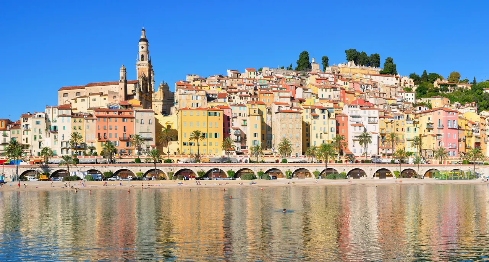
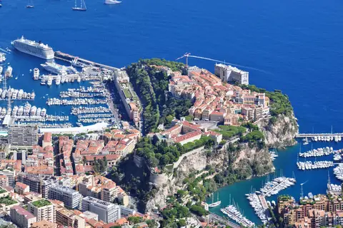

{kind=link}

Cannes
국제영화제의 상징 크루아제트 대로와 호화 요트 항구, 그리고 11세기 중세 어촌의 원형 르 쉬케 언덕이 공존하는 코트다쥐르의 영화 도시.

프랑스와 이탈리아 국경에서 불과 1km 떨어진 코트다쥐르 최동단의 휴양 도시로, 지리학자 엘리제 르클뤼(Élisée Reclus)가 '프랑스의 진주(La Perle de la France)'라 칭송했던 곳이다.
알프스산맥의 끝자락이 북풍을 막아주어 연중 300일 이상 온난한 독특한 지중해 미기후(Microclimate)를 자랑하며, 유럽에서 가장 질 좋은 감귤류인 멘통 레몬(Citron de Menton PGI)의 산지로 유명하다.
가파른 바위 언덕을 따라 살구색, 테라코타, 황토색, 레몬색의 파스텔톤 가옥들이 바다를 향해 계단식으로 쏟아져 내리듯 서 있으며, 언덕 중턱에는 17세기 제노바 바로크 양식의 생 미셸 대성당(Basilique Saint-Michel-Archange)이 53m 종탑을 세우고 지중해를 굽어본다.
모나코(Monaco)의 과시적인 자본과 긴장감 넘치는 왕궁 뒤에 이어지는, 더 느리고 이탈리아적이며 따뜻한 색채 중심의 리비에라 마을 경험이다. 모나코에서 TER 기차로 10분 만에 닿아 가파른 돌계단을 올라 생 미셸 성당 앞 자갈 광장에서 바다를 내려다보고, 사블레트 해변 방파제에서 파스텔 구시가지 전경을 감상한 뒤 항구에서 해산물 저녁을 즐기는 오후~저녁(3~4시간) 일정이 모나코와의 극적인 대비를 완성한다.
| 항목 | 상세 정보 |
|---|---|
| 교통편 | Monaco-Monte-Carlo역에서 TER 기차 탑승 (소요 약 10~12분) / Nice-Ville역에서 약 35~40분 |
| 기차역-구시가지 | Gare de Menton에서 구시가지 및 사블레트 해변까지 도보 12~15분 (평탄한 시내 대로) |
| 성당 운영 | Basilique Saint-Michel 매일 10:00–12:00, 15:00–18:00 (무료 입장) |
| 추천 저녁 식사 | 구항구 주변 해산물 전문 비스트로 (Le Petit Port, Le Bistrot du Port, La Belle Étoile 등) |
| Nice 귀환 팁 | Menton역에서 Nice-Ville 방면 TER 열차는 야간에도 운행 (SNCF Connect 앱으로 귀환 열차 시간 확인 권장) |
🌅 포토 팁: 사블레트 해변(Plage des Sablettes)의 붉은 아치 회랑과 방파제에서 늦은 오후 17:00~18:30경 구시가지를 바라보고 사진을 찍으면 따뜻한 황금빛 햇살을 받은 파스텔 건물들이 물에 반사되어 가장 아름답게 담깁니다.
1619년 모나코 대공 오노레 2세(Honoré II)의 명으로 착공된 17세기 제노바 바로크 양식의 걸작이다.
멘통은 1848년까지 모나코 그리말디 공국의 영토였으며, 1860년 프랑스에 최종 귀속되기 전까지 이탈리아어 방언(멘토나스크어)을 사용했다. 거리의 건물 양식, 식당의 신선한 해산물 파스타와 젤라토, 주민들의 억양까지 프랑스와 이탈리아 문화가 가장 아름답게 융합된 국경 지대의 정체성을 보여준다.
국제영화제의 상징 크루아제트 대로와 호화 요트 항구, 그리고 11세기 중세 어촌의 원형 르 쉬케 언덕이 공존하는 코트다쥐르의 영화 도시.

해발 92m 바위 절벽 위에서 천사의 만(Baie des Anges)과 구시가지, 림피아 항구를 360도 파노라마로 굽어보는 니스 최고의 천연 전망 공원.

지중해 꽃과 프로방스 제철 식재료, 그리고 갓 구워낸 니스 전통 소카(Socca)를 맛보는 유서 깊은 야외 시장 광장.

지중해로 60m 솟아오른 천연 바위 절벽 위에 조성된 모나코 대공국의 역사적 심장부이자 왕궁 마을.

크루아제트의 화려함 뒤에 숨겨진 11세기 옛 어촌의 가파른 돌계단 골목과 정상 성당에서 바라보는 칸 만의 파노라마.

칸 주민들의 부엌이자 지중해 해산물, 프로방스 과일, 꽃, 치즈가 가득한 1934년 유서 깊은 철골 재래시장.